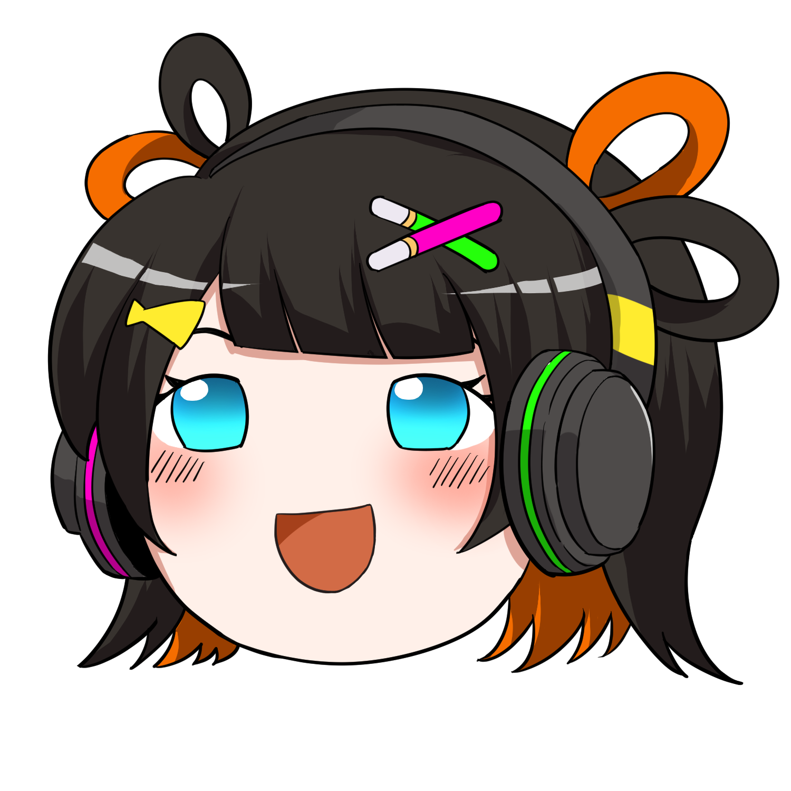

エクソソーム施術を
選ぶときに知っておきたい5つのこと
2023年10月、ある事件がありました。
国内のクリニックで培養上清を点滴投与された患者が亡くなったのです（再生医療抗加齢学会発表）。さらに2019年米ネブラスカ州では、臍帯由来エクソソーム投与で複数患者が重篤な感染症——FDAが警告を出しました。
「効くから」だけでは選べない。
たぬ姉が、本当のプロが必ず確認する5つのポイントを、上田先生のご著書から拾って整理します。
国内のクリニックで培養上清を点滴投与された患者が亡くなったのです（再生医療抗加齢学会発表）。さらに2019年米ネブラスカ州では、臍帯由来エクソソーム投与で複数患者が重篤な感染症——FDAが警告を出しました。
「効くから」だけでは選べない。
たぬ姉が、本当のプロが必ず確認する5つのポイントを、上田先生のご著書から拾って整理します。

たぬ姉
エクソソーム施術は、同じ名前でもクリニックや製品によって中身が大きく違うの。だからこそ、選ぶ前に確認するべきポイントがあるのよ。

りんく
えっ、同じ名前でも違うのだ！？それは知りたいのだ！
1
由来（どんな細胞由来？）
エクソソームや培養上清液は、もとになる細胞によって含まれる成分が変わります。代表的な由来は以下のとおりです。
- 歯髄由来：歯の中の幹細胞から。神経や血管系の因子が比較的多いとされる
- 脂肪由来：脂肪組織から。比較的取れる量が多い
- 臍帯由来：へその緒から。若い細胞由来として注目
- 骨髄由来：骨髄から。臨床応用の歴史が長い
「ヒト由来」「動物由来（サーモン・馬など）」の区分もあります。カウンセリングで確認しましょう。
確認したいこと
- 何由来のエクソソーム／培養上清液ですか？
- ヒト由来か、それ以外か
- 由来による特徴の違いは？
2
製造管理・安全性
体に入れるものなので、製造工程の安全管理は重要です。信頼できるクリニックは、ここをきちんと説明してくれます。
- どこで製造されているか（国内？海外？）
- 細胞加工施設の許可・基準への適合状況
- 感染症のスクリーニング検査
- 品質管理（ロット管理など）

こん太
製造のことなんて聞いていいの？

たぬ姉
もちろんよ。信頼できるクリニックほど、自信を持って答えてくれるはずよ。質問を嫌がるところは要注意ね。
確認したいこと
- 製造元はどこですか？
- 感染症の検査はされていますか？
- 品質はどのように管理されていますか？
3
医師の経験と説明の丁寧さ
エクソソーム施術は比較的新しい分野です。担当する医師がどれくらいこの分野に詳しく、丁寧に説明してくれるかは、満足度を大きく左右します。
- 施術内容を分かりやすく説明してくれるか
- メリットだけでなく、リスクや限界も話してくれるか
- 質問にきちんと答えてくれるか
- 「絶対に効く」など過剰な表現を使っていないか
📌 ご注意
効果を過剰に強調するクリニックには注意が必要です。エクソソーム施術は研究が進行中の分野であり、効果には個人差があります。誠実なクリニックは、限界も含めて説明してくれます。
効果を過剰に強調するクリニックには注意が必要です。エクソソーム施術は研究が進行中の分野であり、効果には個人差があります。誠実なクリニックは、限界も含めて説明してくれます。
4
料金体系の透明性
自由診療なので、価格は施設によって幅があります。表示が分かりやすく、追加費用がないかをチェックしましょう。
- 1回の料金が明示されているか
- 初診料・カウンセリング料は別か
- 回数券・コースの内訳は明確か
- 解約・返金のルールはあるか
- 「今日契約すれば割引」など強い勧誘がないか

りんく
「今だけ！」みたいに急かされるところは、ちょっと怖いのだ…
たぬ姉
その感覚は大事よ。じっくり考える時間をくれるクリニックの方が、信頼できるわ。
5
アフターケアと相談のしやすさ
施術後に体調変化や不安が出たとき、相談できる体制があるかどうかは重要です。
- 施術後の連絡先・相談窓口があるか
- 万が一の副反応への対応体制
- 2回目以降の相談・経過観察
- 医師に直接連絡が取れるか
最終チェックリスト
- 由来・成分について納得できる説明を受けた
- 製造・安全管理について確認できた
- 医師の説明が分かりやすかった
- 料金が明確で、追加費用がないことを確認した
- 施術後の相談窓口を確認した
⚠️ 注意したい「危ないサイン」
逆に、こんなサインがあったら一度立ち止まって考え直すことをおすすめします。
- 「絶対に効く」「100%安全」など断定的な表現
- 由来や製造元の質問に答えてくれない
- カウンセリング当日に強く契約を迫る
- 料金体系が不透明、または高額すぎる
- 体験談や口コミだけを強調する
- 医師ではない人が施術内容を説明する
📌 大切なこと
美容医療や自由診療は「自分で選ぶ」ことが基本です。少しでも違和感があれば、他のクリニックでセカンドオピニオンを取ったり、家族や友人に相談したりしてから決めましょう。
美容医療や自由診療は「自分で選ぶ」ことが基本です。少しでも違和感があれば、他のクリニックでセカンドオピニオンを取ったり、家族や友人に相談したりしてから決めましょう。
📝 まとめ
エクソソーム施術を選ぶときに確認したい5つのポイント：
- 由来：何由来のエクソソーム／上清液か
- 製造管理：どこで、どう作られているか
- 医師の経験と説明：丁寧で、限界も話してくれるか
- 料金の透明性：内訳が明確で、強い勧誘がないか
- アフターケア：相談できる体制があるか

こん太
これだけ確認すれば、安心して相談できるね！
たぬ姉
自分の体のことだから、しっかり納得して選ぶことが大事よ。焦らないで、ゆっくりね。
主な参考文献：
上田 実『改訂版 驚異の再生医療 〜培養上清が世界を救う〜』扶桑社新書（2022年）／厚生労働省「医療広告ガイドライン」／一般的な美容医療・自由診療を選ぶ際の共通的なチェックポイント。
実際の施術選びは、必ず複数の医療機関でカウンセリングを受けて判断してください。
上田 実『改訂版 驚異の再生医療 〜培養上清が世界を救う〜』扶桑社新書（2022年）／厚生労働省「医療広告ガイドライン」／一般的な美容医療・自由診療を選ぶ際の共通的なチェックポイント。
実際の施術選びは、必ず複数の医療機関でカウンセリングを受けて判断してください。